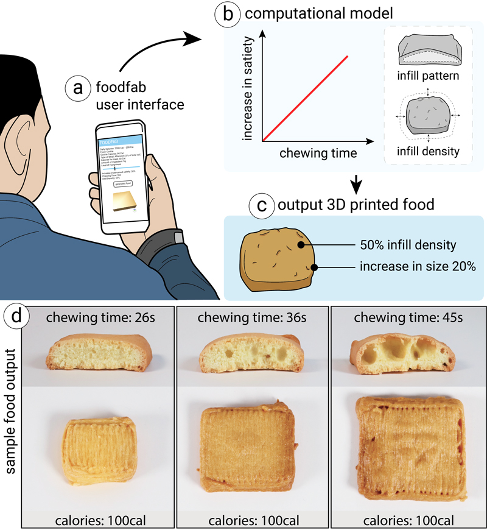

Since 2017 © MIT CSAIL (HCI Engineering group)
All Rights Reserved.



Figure 1.
FoodFab is a system that modifies a person's perceived satiety given a defined amount of calorie intake.
It accomplishes this by creating food structures of different chewing times, which can be accomplished by varying 3D printing parameters, such as infill pattern and infill density.
(a) Users input the type of food and level of hungriness, (b) FoodFab retrieves the required chewing time and matching infill parameters, and (c) 3D prints the food.
(d) All cookies have the same calorie amount, but different chewing times caused by variations in infill.
Food 3D printing enables the creation of customized food structures based on a person's individual needs.
In this paper, we explore the use of food 3D printing to create perceptual illusions for controlling the level of perceived satiety given a defined amount of calories.
We present FoodFab, a system that allows users to control their food intake through modifying a food's internal structure via two 3D printing parameters: infill pattern and infill density.
In two experiments with a total of 30 participants, we studied the effect of these parameters on users' chewing time that is known to affect people's feeling of satiety.
Our results show that we can indeed modify the chewing time by varying infill pattern and density, and thus control perceived satiety.
Based on the results, we propose two computational models and integrate them into a user interface that simplifies the creation of personalized food structures.
Over the last decades, 3D printers have started to move out of the realm of printing with plastic filament, resins, and metal powders and are now also being used for fabricating objects from edible materials. Today, 3D food printers are already in use in a variety of contexts from high-end restaurants that create new types of recipes to elderly care homes that use food 3D printing to reshape unappealing mashed food into more appealing shapes. 3D food printers are thus quickly becoming part of the ongoing revolution of the future of computing and food, and can make a difference in the way we eat, which is gaining more and more attention in light of global challenges around obesity and other eating related disorders.
Recently, food perception researches have started to investigate how to change peoples' perception of satiety by modifying different perceptual cues. Visual cues, for instance, play an important role: When a piece of food is cut into strips rather than cubes, people perceive it as more filling since it takes up more volume on the plate. Similarly, haptic cues, such as an increased biting force and the resulting longer chewing time affect people's feeling of satiety. For instance, people consume less food when eating hard food compared to soft food. Other features of food and food presentation, such as plate size and lighting, have been studied in cross-modal correspondence research, further extending our understanding of perceptual cues and illusions related to food intake.
Within HCI, we see a growing effort to implement such perceptual cues digitally by overlaying content onto the food using augmented reality (AR) and actuated devices. Narumi et al. showed that by visually overlaying a scaled image of food, seen through AR glasses, users perceive the food differently, i.e., believe the actual food changed in size. Similarly, haptic cues induced by vibration motors on the user's teeth and electrodes attached to the user's tongue allow to simulate different food textures and flavors. While these approaches deliver effective illusions, they require users to wear extra hardware and are less practical when used at home since users see the plain food before it is augmented. With the proliferation of food 3D printing technology, the creation of computationally-controlled food perceptions cues is no longer limited to the digital realm but can be tied back to the physical modification of food, which was originally used in food perception research. To investigate a first set of computationally controllable food 3D printing parameters, we hypothesize that changing the infill of a piece of food affects the chewing time, which has been shown to correlate with human satiety perception.
To evaluate the effect of infill, we setup a food 3D printer and fabricated pieces of food with varying infill patterns and infill densities. We tested our assumptions in two independent experiments with a total of 30 participants, in which we measured participant's chewing time using an electromyography sensor (EMS) and the perceived level of satiety using a self-report questionnaire. The results from both experiments show that changes in infill have a significant effect on chewing time and resulting perceived satiety.
Building on the data from the experiments, we develop two computational models, one for each 3D printing parameter (i.e., infill pattern and infill density). The models output the value of the printing parameter based on a person's desired increase in satiety. We then use these computational models to build an end-to-end system, called FoodFab, which simplifies the process of creating customized food structures (Figure 1).
In summary, our contribution is threefold: First, we use food 3D printing techniques to physically modify food, extending prior work on digital augmentation for creating perceptual illusions. Second, we run two experiments with food of varying infill patterns and infill densities to evaluate the effect of these printing parameters on the user's chewing time and perceived satiety. Third, we propose two computational models embedded in an end-to-end system that generate 3D printing parameters based on a desired increase in satiety.
We introduce FoodFab, a food 3D printing system that supports users in controlling their food intake. FoodFab induces varying levels of satiety by creating food structures of different chewing times but with the same amount of calories. To accomplish this, FoodFab modifies two 3D printing parameters: the infill pattern and the infill density. In the following sections, we present a detailed overview of the system structure and discuss the underlying fabrication techniques.
FoodFab System StructureAs can be seen in Figure 2a, FoodFab takes as input: (1) the type of food the user would like to consume (e.g. cookies) and (2) a rating of the user's current hungriness level (e.g.,~35/100). It also queries (3) the user's average daily calorie use from a fitness tracker (e.g., 2000 calories)-alternatively, this information can also be added manually to the user's profile).
Compute Allowable Calorie Intake for the Meal: FoodFab splits the amount of daily calories the user is allowed to consume over a set of daily meals (e.g., 30% for each main course: breakfast, lunch, dinner, and 5% for a morning and afternoon snack; values customizable in the UI). Based on the time of the day, FoodFab then retrieves the meal type and corresponding calorie percentage, and computes the allowable calorie for the meal for the particular user (Figure 2b). For our user, who is having a cookie as an afternoon snack and wants to reduce daily calorie intake by 200 calories, the allowable calories are (2000cal - 200cal) x 5% = 90 cal.
Compute Amount of Ingredient Given Allowable Calories: Next, FoodFab computes the amount of ingredient that can be used to stay within the allowable calories. Since cookie dough comes at 10cal/g and the user has 90cal available, the user can consume 9g (Figure 2c).
Scale the Food 3D Model to Match Ingredient Amount: FoodFab next scales the 3D model of the food to a size at which it requires only the allowed amount of ingredient (assuming solid infill in this processing step). In our case, in which the original cookie 3D model required 11g to print but the user can only consume 9g, FoodFab scales the model to 82% (Figure 2c).
Compute Necessary Increase in Satiety: Based on the user's hungriness level, FoodFab next computes the required increase in satiety. Assuming the user is currently slightly hungry (35% hungry) and would like to be full (0% hungry), the required increase in satiety is 35%.
Compute Chewing Time Required for Satiety Increase: Next, FoodFab takes the desired increase in satiety and retrieves the correlated chewing time from our computational models that we created based on the data from our experiments (Figure 2d). In our case, an increase in satiety of 35% correlates with a chewing time of 32 seconds.
Retrieve 3D Print Parameters for Required Chewing Time: Since a specific chewing time is achieved by a specific value of 3D printing parameter, FoodFab next uses our computational models to retrieve either an infill pattern or an infill density that causes the required amount of chewing for the given 3D~model. In our case, a chewing time of 32 seconds corresponds to an infill density of 61% (Figure 2e).
Apply 3D Printing Parameters to Food 3D Model: FoodFab next applies the 3D printing parameters to the 3D model that was previously scaled to match the allowable calorie intake and corresponding amount of ingredient. When decreasing infill density, the increased sparsity of the food's interior allows the model to be scaled up and to appear larger for the same amount of calories. As shown in Figure 2f, a 61% infill density, for instance, causes FoodFab to scale the 3D model by 3mm in x/y.
Slice and 3D Print: FoodFab then slices the 3D model and sends the resulting '.gcode' file to the 3D printer. The final food structure has a chewing time that leads to the desired increase in satiety while not exceeding the calorie amount previously specified.
Note that there are limits to how much we can modify satiety. As we will detail later in the experiments section, for a food of similar shape and cal/g, we can modify a user's perception of satiety within a range of $17-21%$ for infill pattern and 32-44% for infill density. Thus, taking infill density as an example and a hungriness level of 100%, users would have to eat 3.1 cookie with the least satiety inducing infill density but only 2.3 cookies for the most satiety inducing infill density (100% satiety = 3.1 cookies x 32% satiety increase vs. 2.3 cookies x 44% satiety increase). Given that one cookie in our experiments has 150 calories, this is a calorie saving of 70.4cal or 25.8% while resulting in the same user reported satiety level (70.4cal calorie saving = 272.80cal (3.1 cookies x 88cal) - 202.40cal (2.3 cookies x 88cal)). However, it is not possible to induce the same satiety level by consuming less calories than this given the user's choice of food.
The above five-step process illustrates the main principles underlying the FoodFab system and how it translates desired input and output parameters into the fabrication of food. Next, we describe our choice of 3D printing parameters in detail.
We chose to modify infill for two reasons: (1) variations in infill vary the mechanical strength of the printed food structures, which likely causes changes in chewing pattern and time, and (2) variations in infill are not visible from the outside.
Mechanical Strength: It is well known that infill affects the mechanical properties of 3D printed objects and thus in the case of 3D printed food structures may lead to different chewing patterns and chewing times and consequently different levels of perceived satiety. For instance, it has been shown that for the infill pattern parameter the `honeycomb' infill allows objects to withstand strong forces from all directions whereas the `rectilinear' infill pattern can only withstand forces from specific directions. Similarly, it has been shown that higher infill percentages correspond to higher mechanical strength of 3D printed objects.
Not Visible from the Outside: In addition, since varying infill parameters only affects the internal structure of the food, these structural variations are not visible when the food is viewed on the plate. Since the infill volume is enclosed by solid top and bottom layers, users cannot tell by looking at the food that the food differs inside.
Based on the desired properties of infill, we chose two different infill parameters for our studies.
Infill Pattern: Infill patterns, such as honeycomb, rectilinear, and Hilbert, change how the infill path is laid out (Figure 3). Since the path of each infill pattern requires approximately the same amount of ingredient, varying infill pattern does not affect the size of the input 3D model.
Infill Density: Infill density determines how sparse the model is on its interior (Figure 4). Since lower infill densities require less ingredient, the model can be enlarged to use the remaining ingredient for the rest of the geometry. This is especially desirable, since large food sizes have been shown to lead to an increase in perceived satiety.
We will next report on two experiments with 30 participants total to investigate the effect of infill parameters on chewing time and perceived satiety.
We conducted two independent experiments to investigate the influence of the two 3D printing parameters--infill pattern and infill density--on the chewing time and the user's perceived satiety. We first describe the 3D printing hardware and food ingredients used for the experiments, and then detail the experiment procedure and outcomes.
All food structures printed for the experiments were fabricated on the food 3D printer called 3DbyFlow that is shown in Figure 5. The 3DbyFlow printer allows accurate printing and fabrication of food with different internal structures, necessary to deploy different infill patterns and densities. Based on our experience with the 3D printer, food structures printed from the same 3D model (i.e., printed from the same ingredient amount) have an error rate of ±0.10g, which we determined by weighting the 3D printed food structure using a standard weight scale (SHIMADZU ELB300).
Using the 3DbyFlow printer, we tested different ingredients for creating 3D printed food structures. We focused on ingredients that have been previously used in food 3D printing research including cookie dough, avocado, pork puree, and ganache (see Figure 6).
Since our experiments rely on internal structures of a specific pattern and density, we found that ingredients with the following properties work best for our approach: (1) form a sturdy structure at room temperature, (2) if post-processing (cooking, baking) is required, the food keeps the same shape, size, and internal structure. The ratios were determined experimentally by repeatedly printing the ingredient and observing the resulting stability of the food structure.
Sturdy Structure at Room Temperature: We found that cookie dough, avocado, and pork puree result in a sturdy food structure at room temperature even when sparse infill is used. Ganache, however, was too liquid to maintain its structure even when prepared at room temperature (25C).
Post-Processing to maintain Shape, Size, and Internal Structure: We found that from all ingredients, 3D models printed from cookie dough best kept their shape, size, and internal structure after baking (average error from 3D model ±0.5mm). This was especially the case when the proportion of flour was raised. Pork puree had a larger variation after cooking. Although avocado did not require any post-processing, the phenols contained in avocado caused it to oxidize quickly, which reduced its visually appeal. Since reduced visual appeal may affect the experiment results, we removed it from the selection.
Overall, we found that cookie dough performed best from all ingredients. Using it as the experimental ingredient is also in line with prior work that used cookies as an experimental food item.
To prepare the cookie dough for 3D printing, we blended all ingredients until the cookie dough was evenly mixed. We then filled the dough into a syringe (NORDSON EFD 7012134, 30cc Syringe Barrels) and removed air bubbles resulting from the transfer process by placing the dough inside a vacuum chamber (BACOENG 3 Gallon Vacuum Chamber Kit) for 5 minutes. Our 3D printing nozzle for printing the cookie dough has a diameter of 1.2mm (NORDSON 7018100 Tips; 16GA TT .047" Grey). We had previously experimented with different nozzle sizes 0.8 to 1.6mm and found that nozzles larger than 1.2mm created large printing error while smaller nozzles did not properly extrude the dough.
Before printing, we attached baking paper to the top of the printer glass plate (see Figure 5), which we use later to move the printed cookie from the printer to the oven.
For the experiments, we printed square shaped cookies with either different infill patterns (experiment 1) or densities (experiment 2). All cookies were baked in the oven at 150C-180C, with top and bottom heat, for 15-30 minutes, depending on the size of cookie.
We measured the size and weight of each cookie after baking using a standard weight scale (SHIMADZU ELB300) to verify that cookies had the expected weight and size (within an error of ±0.10g and ±1.00mm). Baked cookies with larger error were removed prior to the experiment.
In both experiments users ate different types of cookies that varied along the parameter space of the 3D printing parameter. We measured users' chewing time and perceived satiety using a combination of EMG and questionnaires.
Measuring Chewing Time (EMG): To measure chewing time, we used an electromyography (EMG) sensor (Tokyo Devices IWS940-DEV) attached to the masticatory muscle of the user's jaw (Figure 7). EMG allows for more accurate measurements than having participants manually start/stop a timer and also has the added benefit that it keeps users' hands free for eating. We later use the data points from the chewing time as input for the computational models that compute the 3D printing parameters.
Measuring Perceived Satiety (Questionnaire): To measure user's perceived satiety, we adapted the questionnaire used in prior work and used the questions: ''How hungry are you now?'' and ''How full are you now?''. We used the magnitude estimation method in which participants rate their hunger and fullness between 0% ('not hungry at all' or 'not full at all') to 100% ('extremely hungry' or `extremely full'). Participants' ratings were recorded using an on-screen questionnaire to investigate the correlation between chewing time and perceived satiety (combining objective and subjective measures). The questionnaire was completed before and after eating cookie.
The experiments were conducted in a quiet, private room at a set light illumination of 500 lux. In the middle of the room, we setup a table on which we placed the cookies, a cup of water, and a computer for answering the questionnaire. Participants were asked to sit comfortable on a chair at the table.
In the following section, we provide details for each of the two experiments. For both experiments, ethics approval from the Local University Ethics committee was obtained, and written consent collected from participants.
In the first experiment, we fabricated cookies with different types of infill patterns to investigate their effect on users' chewing time and perceived satiety.
The experiment followed a within-subjects design with three experimental conditions, i.e., three cookie types with varying infill patterns and with the same physical weight (15g, ~0.10g error) and thus the same calories (1g cookie dough = 10cal, 150cal $\pm$1cal). Figure 3 shows an overview of all three cookies and Table~\ref{tab:table-experiment-1} summarizes their respective measurements and parameters. Cookie #1 was printed with the honeycomb infill pattern, cookie #2 with the Hilbert infill pattern, and cookie #3 with the rectilinear infill pattern, all at 25% infill. Each cookie across all types had a fixed height of 5mm, which it equal to 7 printed layers in our setup. In addition, we gave participants a solid reference cookie as one would obtain from traditional cooking to provide a normal reference representing common experience. The reference cookie was of the same size but had a solid infill (100%) and thus a different weight (22.45g) and calorie amount (224.50cal). The data for the reference cookies is included in the supplementary material.
Based on the mechanical properties of cookie #1-#3, we hypothesized that the honeycomb infill pattern creates the longest chewing time and highest perceived satiety because honeycomb creates the most robust structure, followed by the Hilbert pattern and rectilinear pattern last. The reference cookie cannot be included in the comparison since it is made from a larger ingredient amount and thus contains more calories.
ProcedureParticipants took part in a total of four sessions, each lasting an average of 10 minutes from pre- to post-questionnaire. Each session took place on a different day to reduce effects from overly long chewing time. In each session participants were presented with one of the four types of cookies (one of the infill patterns or the solid reference cookie). We randomized the order of the cookie types between participants using the Latin Square design to avoid order bias.
Before each session, participants were asked to fill out the questionnaire to measure their perceived satiety. Then, participants were presented with 10 cookies of the specific type they were assigned to for the session. Participants were asked to eat as many of the 10 cookies as they wanted. After eating each cookie, we asked them to rate their perceived satiety again using the same questionnaire.
ParticipantsWe recruited ten unpaid volunteers (7 males and 3 females) from a local university to participate in the experiment. Before signing up as participants, they had to confirm that they had no food allergies or restrictions. Participants were instructed not to eat for at least four hours before taking part in the experiment in order to ensure that they had enough appetite. Participants were allowed to drink water after each cookie but not while eating the cookie to prevent any effect the water intake may cause.
Chewing Time: Figure 9a shows the average chewing time for eating one cookie in each of the three different conditions. All participants finished 10 cookies without leftovers. We found that the longest chewing time was elicited by cookie #1 (Honeycomb, 84.2s), followed by cookie #2 (Hilbert, 72.2s) and cookie #3 (Rectilinear, 61.6s). We applied a one-way analysis of variance (ANOVA) and found a significant effect of infill pattern F(4, 29)=4.75, p<0.05). The post-hoc analysis using Bonferroni showed a significant difference between cookie #1 and cookie #2, cookie #2 and cookie #3 (p<0.05), and cookie #1 and cookie #3 (p<0.01). Figure 8 shows the measured chewing time in each condition.
Perceived Satiety: Figure 9b shows the average increase in perceived satiety, i.e. the difference in how hungry participants rated themselves via the pre- and post-questionnaires before and after eating each cookie in each condition. The questionnaire results indicate that participants felt less hungry after eating cookie #1 (21.30% average increase in satiety), compared to cookie #2 (19.51% average increase in satiety) and cookie #3 (17.13% average increase in satiety). We applied a one-way ANOVA to the questionnaire results (i.e., average score between pre- and post-questionnaire). However, we did not find any significant effect of perceived satiety among the conditions (F(4, 29)=7.35, p=0.79).
Based on the results, we conclude that we can indeed control chewing time and perceived satiety by varying the infill pattern. While we cannot find a significant difference of perceived satiety among the infill patterns, the results indicate a different average among all conditions.
Following the same procedure as in experiment 1, we de-signed a second experiment to investigate the effect of different infill densities on chewing time and perceived satiety. Since we had to choose one infill pattern to be able to control this variable, we selected `honeycomb'. For future work additional experiments are needed to complement the information of the other infill patterns with their respective infill densities as well.
The experiment followed the same design with three experimental conditions, however, this time the three cookie types had varying infill densities.
As mentioned earlier, printing cookies using the same amount of ingredient (to keep the calories the same) but varying the infill density results in a change of cookie sizes. Figure 3 shows the three printed cookie types.
Cookie #1 was printed with 39% infill (40x40mm), cookie #2 with the 55% infill (35x35mm) and cookie #3 with 70% infill (25x25mm). Each cookie had a fixed height of 5mm, which is equal to 7 printed layers in our setup. In addition, participants were given the solid reference cookie again in one of the four sessions.
We recruited twenty unpaid volunteers (14 males and 6 females). Out of the twenty participants, ten had participated in experiment 1 but we did not observe any difference in their data when compared to the other participants.
Chewing Time: Figure 10a shows the average chewing time for eating one cookie in each of the three conditions. All participants finished 10 cookies without leftovers. We found the longest chewing time was elicited by cookie #1 (lowest infill / largest size, 45.30s), followed by cookie #2 (medium infill / medium size, 36.35s), and cookie #3 (largest infill / smallest size, 26.0s). We applied a one-way ANOVA and found a significant effect of infill density (F(4, 29) = 22.10, p <0.01). The post-hoc analysis using Bonferroni showed a significant difference among different infill densities (p < 0.05) except between cookie #1 and cookie #2.
Perceived Satiety: Figure 10b shows the average increase in perceived satiety, i.e. the difference in how hungry participants rated themselves via the pre- and post-questionnaires before and after eating each cookie in each condition. The questionnaire results indicate that participants felt least hungry after eating cookie #1 (lowest infill / largest size, 43.8% average increase in satiety), followed by cookie #2 (medium infill / medium size, 38% average increase in satiety) and cookie #3 (largest infill / smallest size, 31.75% average increase in satiety). We applied a one-way ANOVA to the questionnaire results (i.e., average score between pre- and post-questionnaire) and found a significant effect of infill density on perceived satiety (F(4, 29)} = 17.086, p< 0.01). The post-hoc analysis using Bonferroni showed a significant difference among each pair of different infill densities (p< 0.05).
Thus, given these results, we conclude that we can indeed modify chewing time and perceived satiety by varying the infill density.
Based on the results from the two experiments, we conclude that we can modify the chewing time by modifying a food's internal structure via 3D printing parameters, such as infill pattern and infill density, and that the chewing time is correlated with the perceived satiety.
To make our experimental results applicable in the context of creating food structures of a desired chewing time, we create two computational models, one for each of the 3D printing parameters infill pattern and infill density.
Each model consists of two parts: (1) a mapping of perceived satiety to chewing time, and (2) a mapping of chewing time to 3D printing parameter, i.e. a specific infill pattern type or infill density percentage. Note that these computational models are meant as an illustration of the potential applications that FoodFab will enable, i.e. they only work for a food 3D model of the same initial dimensions as used in the experiment.
Mapping Perceived Satiety to Chewing Time: Prior work has shown that chewing time has a correlation with perceived satiety, which was also confirmed by our experiments (i.e., the longer participants chewed, the higher they rated their perceived satiety afterwards, with significant effects for infill density and correlated increased averages for infill pattern).
To show this effect in one graph, we summarize the data on chewing time and perceived satiety in Figure 11a with perceived satiety on one axis and chewing time on the other. We then fit a linear graph resulting in the following formula: chewing time t = 0.18 x perceived satiety increase + 5.96. Thus, once users indicated their hungriness level (i.e., current perceived satiety level), we can determine the required increase in satiety, and then compute the necessary chewing time. For example, an increase in satiety of 20% requires a chewing time of 76s when infill pattern variation is used (76s = 0.18 x 20% + 5.96).
Chewing Time to Infill Pattern Type: Next, we can use the required chewing time to select an infill pattern that creates this chewing time from Figure 11b. Since infill pattern is a discrete value, we discretize the continuous space while minimizing error. Continuing the previous example, if the user needs to chew 76s, the hilbert infill pattern matches the chewing time most closely.
Maximum Increase in Satiety and Chewing Time: As can be seen in Figure 11a/b, using infill pattern we can modify a user's perception of satiety within a range of 17-22% and the chewing time from 61 seconds to 84 seconds.
Perceived Satiety to Chewing Time: Similarly, we can summarize the data for infill density as shown in Figure 12a with perceived satiety on one axis and chewing time on the other. We then fit a linear graph resulting in the following formula: chewing time t = 0.62 x perceived satiety increase + 15.47. Thus, once users indicated their hungriness level (current perceived satiety), we can calculate the required increase in satiety and then compute the required chewing time. For instance, as mentioned in Figure 2d, a desired increase in satiety of 35% requires a chewing time of 37.17s when infill density variation is used (37.17s = 0.62 x 35 + 15.47).
Chewing Time to Infill Density Percentage: Next, we retrieve the infill density that creates the required chewing time (Figure~ 12b). To create a formula that computes the matching infill density, we applied regression estimation using a linear function (R2 = 0.793, p <0.01) that interpolates between the different densities. As result, we obtain the following equation: T{chew}= 0.62 x D{infill} + 69.88 where T{chew} represents the chewing time and D{infill} represents the infill density. Entering 32s for chewing time into this equation, results in an infill density of 61% (Figure 2e).
Scaling the Model: After determining the desired infill density, we can scale up the model to enlarge the surface area. Given our predefined shapes (square cookies), we obtain the following formula: Area = -0.39 x D{infill} + 55.27)^2. Thus, given the infill density of 61%, our model will be scaled by a factor of 0.95 (area for infill density 100% = 30mm^{2}, area for infill density 61% = 31.48mm^{2}, 30mm^{2}/31.48mm^{2} = 0.95). This is also shown in Figure 2f.
Maximum Increase in Satiety and Chewing Time: As can be seen in Figure 12a/b, using infill density we can modify a user's perception of satiety within a range of 31-45% and the chewing time from 26 seconds to 46 seconds.
Our computational models allow us to create the user inter-face that is conceptually shown in Figure 2 and implemented as a plugin to the 3D editor Rhino as shown in Figure 13.
As explained at the beginning of the paper, it takes as input a user's selection from a list of foods, a level of hunger, and the daily calorie use. Note that, the daily calories use is either automatically retrieved from a user's fitness tracker or predefined in the user's profile. The system then outputs a set of 3D printing parameters and ''.gcode'' file for 3D printing that create the required chewing time.
Throughout this paper, we contributed a first exploration of how food 3D printing can be used to physically modify food. Thus, we extend prior work that digitally augmented food and, most notably, remove the need for wearing attachments by using 3D printers to computationally-control different parameters concerning the food structure. In the next section, we discuss extensions of our work for food perception research, detail current limitations of our approach, and outline opportunities for future work.
In this paper, we focused on two specific 3D printing parameters, i.e., infill patterns and infill density, and showed that food 3D printing cannot only be used to create novel types of taste structures as was the focus of prior work, but also has important implications for modifying food intake. As mentioned previously, food 3D printing modifies the food structures physically, which is closer to the process originally used in food perception research. Thus, by building onto our work that explored a first set of printing parameters and demonstrated how to embed the results into an end-to-end food fabrication pipeline, food perception researcher can add to the space of available perceptual illusions, further enhancing the parameter space for computer-controlled food fabrication. In addition, by automating the generation of computationally modified food, our work facilitates follow up research on cross-modal cues, such as effects that are caused by grasping or seeing the food. Further research is needed to integrate different cues into one such coherent model.
In our work, the experiments were run on one specific type of food and thus the resulting data points result in computational models that can only be used for food structures of the same characteristics. Further work across additional ingredients and food shapes is needed before the results can be generalized for larger classes of food types. In addition, our work only investigated two printing parameters, i.e., infill patterns and infill density, but other parameters, such as the number of shells and number of top and bottom layers may also influence the chewing time. Furthermore, while the food structures in this paper were chosen to maintain their shape during printing even when infill is varied, it is more difficult to vary infill when printing structures have steep overhangs or are large in size. Finally, while we hope that our work may help in reducing overeating, additional experiments are needed to evaluate if people who overeat can reliably rate their own satiety levels.
While food 3D printing is still a new research topic, the ex-tended interest in food computing and a first deployment and use of food 3D printers in restaurants point towards a future in which people will make use of such personalized automated meals. Below, we describe three usage scenarios where our approach can be useful.
Integration with Daily Meal Preparation: Food 3D printers that emerge on the consumer market tend to offer a list of recipes linked on the manufacturer website where a user can buy the ingredients as prefilled food capsules in supermarkets. FoodFab can be integrated into this emerging ecosystem around food 3D printers by using computational models to personalize the recipes offered to consumers to help them manage their food intake.
Decreasing Food Size Over Time: People who overeat tend to have an attraction to large portion sizes to which they get accustomed over time. Thus, to a person who overeats, a regularly sized meal may seem small in comparison. A future avenue for FoodFab would be to investigate if small changes in meal size over time can get users accustomed to regularly sized portions. As we have previously shown, we can modify the size of a piece of food by changing the infill density while keeping calories constant.
Culinary chefs: We envision that in restaurants, Chefs will not only customize a user's meal based on allergies and other food restrictions, but will take calorie constraints into account as well. By being able to modify the food's size without adding calories, Chefs will be able to prepare meals of equal sized portions for people that are sharing a dinner experience in a group. Note that we see our work in line with the Digital Gastronomy paradigm, in which the chef and the fabrication device work hand-in-hand in the creative process of preparing a meal, i.e. the chef is not replaced by a machine but the manual practice of the chef is enhanced with digital capabilities.
Extending to other Fabrication Methods: Finally, our idea of realizing food perception tricks goes beyond 3D printing and can also be applied to other fabrication processes. Figure 14 shows how we use laser cutting to chop food to increase the apparent size. Compared to 3D printing, laser cutting has the benefit that it works with ingredients other than pastes. For instance, laser cutters are able to process materials, such as crackers and ham. However, on the flip side, laser cutting is limited in that it cannot cut through thick shapes and due to the heat employed can burn or melt a piece of food.
In this paper, we demonstrated how to use personal fabrication devices to create food perception illusions. Rather than digitally augmenting food, we showed how to use food 3D printing to physically integrate perceptual cues.
We investigated how by changing infill parameters of a piece of food, we were able to modify the chewing time and correlated perceived satiety while maintaining the same amount of ingredient and thus calories. We incorporate the results from our experiments into two computational models, which estimate the 3D printing parameters for a required chewing time and desired satiety level. For future work, we plan to collaborate with food perception researchers to evaluate the effectiveness of structural and composition changes and to study long-term habituation effects, such as those outlined by Velasco et al.
We would like to thank Isabel Qamar for her help with the video narration. This work has been supported by the JSPS KAKENHI under Grant No. JP15H05925 and JP19K20321, and the ERC under the European Union's Horizon 2020 research and innovation program under Grant No. 638605.